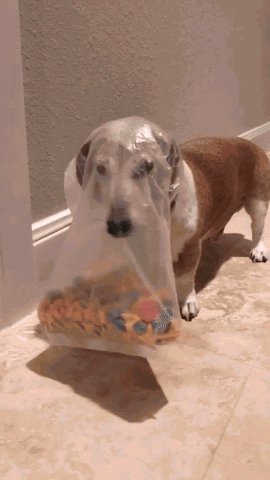

Teoria: a)Uwagi na temat JS -kiedy powstała? W 1995 roku. -dlaczego jest to język skryptowy? Ponieważ, nie musi zostać skompilowany do kodu maszynowego, aby można było zobaczyć efekty jego działania -gdzie jest wykonywany JS (klient lub serwer)? -dlaczego jest to bezpieczne narzędzie -czy jest to język obiektowy , jeśli tak to dlaczego. b)Przepisz linie kody pod nimi wytłumaczenie: <input type="button" name="przycisk" value="Nowa Strona" onclick="WinOpen('WinOpen_Malek ')"> wytłumaczenie: . window.open("obraz.html","okienko","toolbar=no,directories=no,menubar=no,height=280,width=160,top=200,left=200"); wytłumaczenie:.
